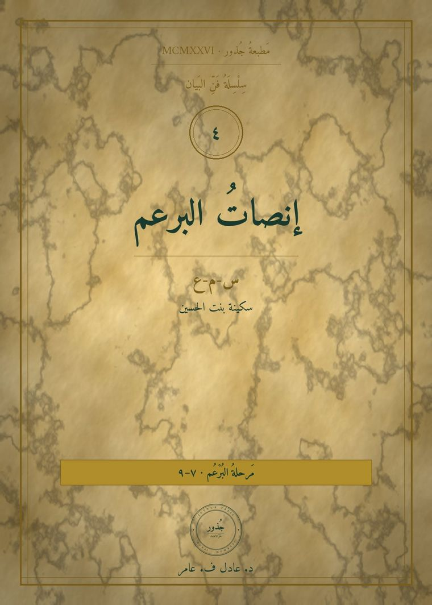
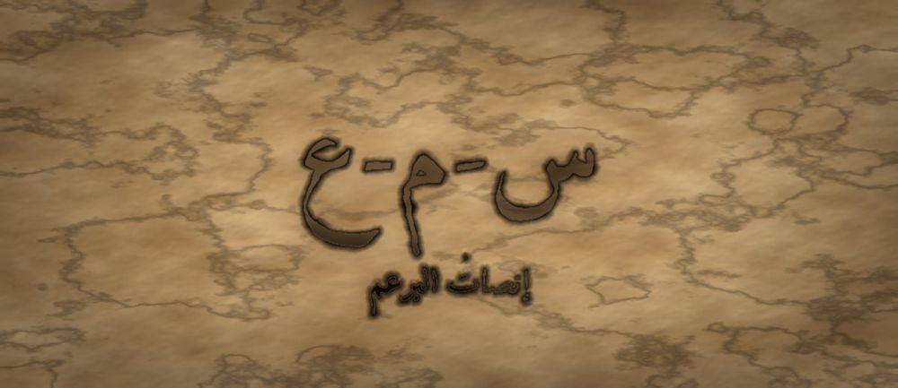

مَطبعةُ جُذور · دبي · MCMXXVI · سِلْسِلَةُ فَنِّ البَيان

مَرحلةُ البُرْعُم · الفئة ٧–٩ · الجذر س-م-ع · سكينة بنت الحسين
❦ ✦ ❧
السِّفْرُ ٤ — إنصاتُ البرعم
«أُنْصِتُ لِأَفْهَمَ، لَا لِأَرُدَّ»

الرِّسَالَةُ الجَوْهَرِيَّة
الْإِنْصَاتُ لَيْسَ سُكُوتًا حَتَّى يَنْتَهِيَ الْآخَرُ، بَلْ عَمَلٌ كَامِلٌ: أَنْ تُوقِفَ الْجُمْلَةَ الَّتِي تُعِدُّهَا فِي رَأْسِكَ، وَتَتْبَعَ مَعْنَى مَنْ أَمَامَكَ حَتَّى آخِرِهِ. مَنْ أَنْصَتَ فَهِمَ، وَمَنِ انْتَظَرَ دَوْرَهُ فَقَطْ سَمِعَ صَوْتًا وَلَمْ يَسْمَعْ إِنْسَانًا.
بِطَاقَةُ هُوِيَّةِ السِّفْر
| المستوى / الدرجة | بُرْعُم — بُرْعُمٌ يُنْصِتُ (الدرجةُ الأولى في المستوى الثاني) |
| الفئة العمرية | ٧–٩ سنوات · نطاقُ تداخلٍ نازلٌ إلى ٦ للمتقدّمِ وصاعدٌ إلى ١٠ للمتأنّي |
| الجذر الأساسي | س – م – ع · الْإِنْصَاتُ: السَّمْعُ حِينَ يُضَافُ إِلَيْهِ الْقَصْدُ |
| أسرة الجذر | سَمْع · سَمِعَ · سَامِع · مَسْمُوع · اسْتِمَاع · مِسْمَاع |
| المحطّة | الْإِنْصَاتُ — أوّلُ فعلٍ يُعطي الطفلُ فيهِ انتباهَهُ لغيرِهِ |
| المرساة الحسّيّة | الطفلُ يعدُّ على أصابعِهِ ثلاثةَ أشياءَ سمعَها من المتكلّمِ قبلَ أنْ يردَّ |
| الاستعارة | البرعمُ الذي انفتحَ قليلًا، يُدخِلُ الضوءَ والصوتَ قبلَ أنْ يُخرِجَ لونَهُ |
| الشخصيتان الحكيمتان | سُكَيْنَةُ بِنْتُ الْحُسَيْنِ (صاحبةُ مجلسٍ أدبيٍّ يُنصَتُ فيهِ) + الجَدّةُ رملة |
| الشخصية الرمزيّة | نورُ البرعمِ — نمَتْ من مرحلةِ البذرةِ إلى البرعمِ |
| الشخصية المضادّة | الصَّدَى الْمُتَعَجِّلُ — شخصيّةٌ رمزيّةٌ (لا تاريخيّةٌ) يردُّ قبلَ أنْ يسمعَ التمامَ، ويتعلّمُ الانتظارَ |
| المهارة (فعل) | أُنْصِتُ — الحلقةُ الرابعةُ في القوسِ التراكميِّ، وأوّلُ مهارةٍ اجتماعيّةٍ صريحةٍ |
| المرجعُ النظريّ | استرشادًا بـ TRT — نظرية القراءة الملموسة · ومجال الوعيِ الاجتماعيِّ |
| حدّ اللمس | كلُّ إشارةٍ يؤدّيها الطفلُ بيدِهِ هو؛ ولا تُوضَعُ يدٌ على فمِ طفلٍ أو كتفِهِ لإسكاتِهِ |
صَاحِبُ السِّفْرِ مِنَ التُّرَاث
سُكَيْنَةُ بِنْتُ الْحُسَيْنِ بْنِ عَلِيٍّ سيّدةٌ من بيتِ النبوّةِ عاشتْ في المدينةِ في القرنِ الأوّلِ الهجريِّ، ذكرَ الإخباريّونَ أنَّ مجلسَها كانَ يجتمعُ فيهِ الشعراءُ وأهلُ الأدبِ فتسمعُ وتحكمُ بينَهم بذوقٍ رفيعٍ. نستلهمُ منها هنا: أنَّ الإنصاتَ الجيّدَ مهارةٌ تُصنَعُ بها المجالسُ، وأنَّ السامعَ الحاذقَ يصنعُ متكلّمًا أفضلَ.
الشَّخْصِيَّةُ المُضَادَّة — الصَّدَى الْمُتَعَجِّلُ — شخصيّةٌ رمزيّةٌ لا تاريخيّةٌ، يسكنُ الوادي ويردُّ الكلامَ قبلَ أنْ يتمَّ، فيرجّعُ أنصافَ الجملِ مقلوبةَ المعنى. لا يُهزَمُ ولا يُشيطَنُ؛ بل يتعلّمُ أنْ ينتظرَ حتى تنتهيَ الجملةُ، فيكتشفُ أنَّ صدىً واحدًا كاملًا خيرٌ من عشرةِ أنصافٍ.
الجَذْرُ وَأُسْرَتُه
س-م-ع — سَمْع · سَمِعَ · سَامِع · مَسْمُوع · اسْتِمَاع · مِسْمَاع
الجذرُ (س-م-ع) سالمٌ، ومنهُ «اسْتِمَاع» على وزنِ افْتِعَال، وزيادةُ السينِ والتاءِ فيهِ تفيدُ الطلبَ والقصدَ: فالمستمِعُ طالبٌ للسمعِ لا واقعٌ عليهِ. ويُفيدُ المعلّمَ أنْ يلاحظَ الفرقَ الدلاليَّ: «سَمِعَ» قد تقعُ بلا إرادةٍ، و«اسْتَمَعَ» و«أَنْصَتَ» لا تقعانِ إلّا بقصدٍ — وهذا الفرقُ هو درسُ السفرِ كلِّهِ.
القِصَّةُ الكَامِلَة
المشهد ١ — مَجْلِسٌ يَتَكَلَّمُ فِيهِ الْجَمِيعُ وَلَا يَسْمَعُ أَحَدٌ
صَارَتْ نُورُ بُرْعُمًا. لَهَا نَفَسٌ تَعْرِفُهُ، وَصَوْتٌ تُحِبُّهُ، وَنَظْرَةٌ تَصِلُ. فَدَخَلَتْ أَوَّلَ مَجْلِسٍ فِي حَيَاتِهَا: حَلْقَةٌ مِنَ الْأَصْدِقَاءِ تَحْتَ شَجَرَةٍ. لَكِنَّ الْمَجْلِسَ كَانَ عَجِيبًا. كَانَ كُلُّ وَاحِدٍ يَتَكَلَّمُ، وَلَا أَحَدَ يَسْمَعُ. يَقُولُ الْأَوَّلُ: «أَنَا رَأَيْتُ...» فَيَقْطَعُهُ الثَّانِي: «وَأَنَا! وَأَنَا رَأَيْتُ أَكْثَرَ!» وَيَرْفَعُ الثَّالِثُ صَوْتَهُ فَوْقَهُمَا. حَاوَلَتْ نُورُ أَنْ تَحْكِيَ عَنْ صَدِيقَتِهَا الْفَرَاشَةِ، فَلَمْ تُكْمِلْ جُمْلَتَهَا مَرَّةً وَاحِدَةً. جَلَسَتْ فِي آخِرِ الْحَلْقَةِ وَقَالَتْ لِنَفْسِهَا: «هُنَا كَلَامٌ كَثِيرٌ جِدًّا... وَلَا أَحَدَ مَعَ أَحَدٍ. لِمَاذَا أَشْعُرُ بِالْوَحْدَةِ وَسْطَ كُلِّ هَذَا الضَّجِيجِ؟» وَجَرَّبَتْ مَرَّةً أُخْرَى فَرَفَعَتْ صَوْتَهَا قَلِيلًا، فَارْتَفَعَتِ الْأَصْوَاتُ كُلُّهَا مَعَهَا. وَجَرَّبَتْ أَنْ تَسْكُتَ، فَلَمْ يَنْتَبِهْ أَحَدٌ إِلَى سُكُوتِهَا أَصْلًا. فَقَالَتْ فِي نَفْسِهَا: «فِي هَذَا الْمَجْلِسِ كُلُّ وَاحِدٍ يَنْتَظِرُ دَوْرَهُ فِي الْكَلَامِ، وَلَا أَحَدَ يَنْتَظِرُ الْمَعْنَى. كَأَنَّنَا جَالِسُونَ مَعًا وَكُلُّ وَاحِدٍ فِي بَيْتٍ وَحْدَهُ.»
المشهد ٢ — الصَّدَى الْمُتَعَجِّلُ يَرُدُّ قَبْلَ أَنْ تَتِمَّ الْجُمْلَةُ
وَقَفَتْ نُورُ عِنْدَ طَرَفِ الْوَادِي وَنَادَتْ: «أَنَا أُحِبُّ أَنْ أَحْكِيَ حِكَايَةً طَوِيلَةً!» فَرَدَّ عَلَيْهَا صَوْتٌ سَرِيعٌ قَبْلَ أَنْ تُكْمِلَ: «طَوِيلَةً! طَوِيلَةً!» قَالَتْ نُورُ: «مَنْ أَنْتَ؟» قَالَ: «أَنَا الصَّدَى الْمُتَعَجِّلُ! أَنَا أَسْرَعُ رَادٍّ فِي الْوَادِي كُلِّهِ. لَا أَنْتَظِرُ أَحَدًا حَتَّى يُكْمِلَ.» جَرَّبَتْ نُورُ مَرَّةً أُخْرَى: «أَنَا لَا أُحِبُّ أَنْ أَبْقَى وَحْدِي.» فَرَدَّ الصَّدَى مُسْرِعًا: «وَحْدِي! وَحْدِي!» فَضَحِكَتْ نُورُ ثُمَّ حَزِنَتْ، وَقَالَتْ: «أَنْتَ تَرُدُّ عَلَيَّ وَلَكِنَّكَ لَا تَفْهَمُنِي. أَنْتَ تَأْخُذُ آخِرَ كَلِمَةٍ وَتَتْرُكُ كُلَّ الْمَعْنَى.» فَسَكَتَ الصَّدَى قَلِيلًا، لِأَنَّهُ لَمْ يَسْمَعْ هَذَا الْكَلَامَ مِنْ قَبْلُ. ثُمَّ قَالَ الصَّدَى مُدَافِعًا عَنْ نَفْسِهِ: «وَلَكِنِّي أَرُدُّ دَائِمًا! أَنَا لَا أَتْرُكُ أَحَدًا بِلَا رَدٍّ!» قَالَتْ نُورُ: «الرَّدُّ السَّرِيعُ لَيْسَ فَهْمًا يَا صَدَى. أَنْتَ تَسْمَعُ صَوْتِي، وَلَا تَسْمَعُنِي أَنَا.» فَبَقِيَ الصَّدَى سَاكِتًا لَحْظَةً كَامِلَةً، وَكَانَتْ أَطْوَلَ لَحْظَةِ صَمْتٍ عَرَفَهَا الْوَادِي مُنْذُ زَمَنٍ.
المشهد ٣ — سُكَيْنَةُ وَالْجَدَّةُ رَمْلَةُ تُعَلِّمَانِ نُورَ قَاعِدَةَ الثَّلَاثَةِ
فِي الْمَدِينَةِ كَانَ لِسُكَيْنَةَ بِنْتِ الْحُسَيْنِ مَجْلِسٌ يَأْتِيهِ الشُّعَرَاءُ. دَخَلَتْ نُورُ وَمَعَهَا الْجَدَّةُ رَمْلَةُ، فَرَأَتْ عَجَبًا: الشَّاعِرُ يَقُولُ، وَسُكَيْنَةُ سَاكِنَةٌ تَمَامًا، لَا تَقْطَعُهُ وَلَا تَسْتَعْجِلُهُ، وَعَيْنُهَا مَعَهُ. فَلَمَّا فَرَغَ، أَعَادَتْ عَلَيْهِ مَعْنَاهُ بِكَلِمَاتِهَا، ثُمَّ قَالَتْ رَأْيَهَا. فَقَالَ الشَّاعِرُ: «مَا سَمِعَنِي أَحَدٌ كَمَا سَمِعْتِنِي.» هَمَسَتْ نُورُ: «كَيْفَ تَفْعَلِينَ ذَلِكَ؟» قَالَتْ سُكَيْنَةُ: «أُوقِفُ جُمْلَتِي الَّتِي أُرِيدُ أَنْ أَقُولَهَا، وَأَتْبَعُ جُمْلَتَهُ هُوَ حَتَّى آخِرِهَا.» وَقَالَتِ الْجَدَّةُ رَمْلَةُ: «وَلَكَ عَلَامَةٌ يَا نُورُ: قَبْلَ أَنْ تَرُدِّي، عُدِّي عَلَى أَصَابِعِكِ ثَلَاثَةَ أَشْيَاءَ سَمِعْتِهَا مِنْهُ. إِنْ لَمْ تَجِدِي ثَلَاثَةً، فَأَنْتِ لَمْ تُنْصِتِي بَعْدُ.» ثُمَّ سَأَلَتْ نُورُ: «وَإِذَا كَانَ عِنْدِي كَلَامٌ جَمِيلٌ أَخَافُ أَنْ أَنْسَاهُ؟» فَقَالَتْ سُكَيْنَةُ: «إِنْ نَسِيتِهِ فَلَمْ يَكُنْ مُهِمًّا، وَإِنْ كَانَ مُهِمًّا فَلَنْ تَنْسَيْهِ. أَمَّا الْإِنْسَانُ الَّذِي أَمَامَكِ فَلَنْ يُعِيدَ عَلَيْكِ قَلْبَهُ مَرَّتَيْنِ.» فَكَتَبَتْ نُورُ هَذِهِ الْجُمْلَةَ فِي ذَاكِرَتِهَا، وَخَرَجَتْ مِنَ الْمَجْلِسِ وَهِيَ غَيْرُ الَّتِي دَخَلَتْ.
المشهد ٤ — نُورُ تُجَرِّبُ فَتَكْتَشِفُ مَا لَمْ تَسْمَعْهُ مِنْ قَبْلُ
رَجَعَتْ نُورُ إِلَى الْحَلْقَةِ تَحْتَ الشَّجَرَةِ. جَلَسَتْ أَمَامَ صَدِيقٍ كَانَ يَتَكَلَّمُ دَائِمًا وَلَا يَسْمَعُهُ أَحَدٌ. الْتَفَتَتْ إِلَيْهِ بِجِذْعِهَا، وَنَظَرَتْ لَحْظَةً كَمَا تَعَلَّمَتْ، ثُمَّ أَوْقَفَتْ جُمْلَتَهَا الَّتِي كَانَتْ تُعِدُّهَا فِي رَأْسِهَا. وَصَارَتْ تَعُدُّ عَلَى أَصَابِعِهَا: وَاحِدٌ — هُوَ يَقُولُ إِنَّ جَدَّهُ مَرِيضٌ. اثْنَانِ — هُوَ خَائِفٌ. ثَلَاثَةٌ — هُوَ يُرِيدُ أَنْ يَزُورَهُ الْيَوْمَ. وَلَمَّا سَكَتَ، قَالَتْ نُورُ: «جَدُّكَ مَرِيضٌ، وَأَنْتَ خَائِفٌ، وَتُرِيدُ أَنْ تَزُورَهُ.» فَاتَّسَعَتْ عَيْنَا الصَّدِيقِ وَقَالَ بِصَوْتٍ مُرْتَجِفٍ: «نَعَمْ! هَذَا مَا قُلْتُهُ لِكُلِّ النَّاسِ... وَأَنْتِ أَوَّلُ مَنْ سَمِعَهُ.» وَشَعَرَتْ نُورُ أَنَّ الْإِنْصَاتَ لَيْسَ سُكُوتًا، بَلْ هَدِيَّةٌ. وَبَعْدَ قَلِيلٍ سَأَلَتْهُ: «هَلْ فَهِمْتُ صَحِيحًا؟» فَقَالَ: «نَعَمْ. وَزِيدِي: أَنَا أَيْضًا لَا أَعْرِفُ مَاذَا أَقُولُ لَهُ حِينَ أَرَاهُ.» فَعَرَفَتْ نُورُ أَنَّ الْإِنْصَاتَ يَفْتَحُ بَابًا ثَانِيًا بَعْدَ الْبَابِ الْأَوَّلِ، وَأَنَّ النَّاسَ يَقُولُونَ أَعْمَقَ مَا عِنْدَهُمْ حِينَ يَتَأَكَّدُونَ أَنَّ أَحَدًا لَنْ يَقْطَعَهُمْ.
المشهد ٥ — الصَّدَى يَتَعَلَّمُ أَنْ يَنْتَظِرَ آخِرَ الْجُمْلَةِ
عَادَتْ نُورُ إِلَى الْوَادِي وَقَالَتْ: «يَا صَدَى، أُرِيدُ أَنْ أُجَرِّبَ مَعَكَ شَيْئًا. لَا تَرُدَّ حَتَّى أَسْكُتَ تَمَامًا. انْتَظِرْ حَتَّى تَسْمَعَ الصَّمْتَ بَعْدَ كَلَامِي.» قَالَ الصَّدَى: «لَكِنِّي أَخَافُ أَنْ يَنْسَانِي النَّاسُ إِنْ تَأَخَّرْتُ!» قَالَتْ نُورُ: «لَنْ يَنْسَوْكَ. سَيَتَذَكَّرُونَكَ أَكْثَرَ.» ثُمَّ قَالَتْ بِبُطْءٍ: «أَنَا لَا أُحِبُّ أَنْ أَبْقَى وَحْدِي حِينَ أَكُونُ حَزِينَةً.» وَانْتَظَرَ الصَّدَى... وَانْتَظَرَ... حَتَّى سَكَتَتْ. ثُمَّ رَدَّ الْجُمْلَةَ كَامِلَةً بِصَوْتٍ هَادِئٍ: «أَنَا لَا أُحِبُّ أَنْ أَبْقَى وَحْدِي حِينَ أَكُونُ حَزِينَةً.» فَجَلَسَتْ نُورُ عَلَى الْحَجَرِ وَدَمْعَةٌ فِي عَيْنِهَا وَقَالَتْ: «الْآنَ فَهِمْتَنِي.» وَقَالَ الصَّدَى فَرِحًا: «وَالْآنَ صِرْتُ أَنْفَعُ. صَدًى وَاحِدٌ كَامِلٌ خَيْرٌ مِنْ عَشَرَةِ أَنْصَافٍ.» ثُمَّ قَالَ الصَّدَى: «عَلِّمِينِي شَيْئًا آخَرَ.» قَالَتْ نُورُ: «لَا تَرُدَّ آخِرَ كَلِمَةٍ فَقَطْ، بَلْ قُلْ مَا فَهِمْتَهُ مِنِّي كُلَّهُ.» فَجَرَّبَ الصَّدَى وَقَالَ: «أَنْتِ تَقُولِينَ إِنَّ الْوَحْدَةَ تُوجِعُكِ حِينَ تَحْزَنِينَ.» فَقَالَتْ نُورُ: «نَعَمْ! هَذَا بِالضَّبْطِ مَا قُلْتُهُ.» وَضَحِكَا مَعًا، وَصَارَ الْوَادِي أَجْمَلَ.
المشهد ٦ — طَقْسُ الْخِتَامِ: ثَلَاثَةٌ عَلَى الْأَصَابِعِ
فِي آخِرِ النَّهَارِ اجْتَمَعَتِ الْحَلْقَةُ تَحْتَ الشَّجَرَةِ، وَمَعَهُمُ الْجَدَّةُ رَمْلَةُ. قَالَتِ الْجَدَّةُ: «طَقْسُنَا الْيَوْمَ فِي يَدِكَ أَنْتَ. حِينَ يَتَكَلَّمُ أَحَدٌ، أَغْلِقْ كَفَّكَ. وَمَعَ كُلِّ شَيْءٍ تَسْمَعُهُ مِنْهُ، افْتَحْ إِصْبَعًا: وَاحِدٌ... اثْنَانِ... ثَلَاثَةٌ. فَإِذَا سَكَتَ، قُلْ لَهُ مَا سَمِعْتَ، ثُمَّ قُلْ مَا عِنْدَكَ.» فَجَرَّبَ الْأَطْفَالُ، وَحَدَثَ شَيْءٌ غَرِيبٌ: صَارَ الْمَجْلِسُ أَهْدَأَ، وَصَارَ كُلُّ وَاحِدٍ يَتَكَلَّمُ أَقَلَّ وَيَقُولُ أَكْثَرَ. قَالَتْ نُورُ: «كُنْتُ أَظُنُّ أَنَّ الْمُهِمَّ أَنْ يَسْمَعُونِي. وَاكْتَشَفْتُ أَنَّ مَنْ يُنْصِتُ أَوَّلًا، يُنْصِتُونَ لَهُ.» قَالَتِ الْجَدَّةُ: «وَغَدًا يَا نُورُ تَتَعَلَّمِينَ مَا يَأْتِي بَعْدَ الْإِنْصَاتِ مُبَاشَرَةً: السُّؤَالُ.» وَقَالَ أَحَدُ الْأَطْفَالِ: «وَمَاذَا أَفْعَلُ إِنْ نَسِيتُ الْعَدَّ؟» قَالَتِ الْجَدَّةُ: «لَا شَيْءَ. الْأَصَابِعُ لَيْسَتْ امْتِحَانًا، هِيَ فَقَطْ تُذَكِّرُكَ أَنْ تَبْقَى مَعَهُ حَتَّى يَنْتَهِيَ.» وَقَالَ آخَرُ: «وَإِنْ لَمْ أُحِبَّ أَنْ أَجْلِسَ؟» قَالَتْ: «قِفْ وَأَنْتَ تُنْصِتُ، أَوْ تَحَرَّكْ فِي مَكَانِكَ. الْإِنْصَاتُ فِي انْتِبَاهِكَ لَا فِي جِلْسَتِكَ.»
النُّسْخَةُ المُخْتَصَرَة
دَخَلَتْ نُورُ مَجْلِسًا يَتَكَلَّمُ فِيهِ الْجَمِيعُ وَلَا يَسْمَعُ أَحَدٌ. فَشَعَرَتْ بِالْوَحْدَةِ وَسْطَ الضَّجِيجِ. نَادَتْ فِي الْوَادِي، فَرَدَّ عَلَيْهَا الصَّدَى الْمُتَعَجِّلُ قَبْلَ أَنْ تُكْمِلَ: «طَوِيلَةً! طَوِيلَةً!» فَقَالَتْ: «أَنْتَ تَرُدُّ وَلَا تَفْهَمُ.» ثُمَّ رَأَتْ سُكَيْنَةَ بِنْتَ الْحُسَيْنِ فِي مَجْلِسِهَا: تَسْكُتُ حَتَّى يَتِمَّ الشَّاعِرُ، ثُمَّ تُعِيدُ مَعْنَاهُ بِكَلِمَاتِهَا. وَعَلَّمَتْهَا الْجَدَّةُ رَمْلَةُ قَاعِدَةَ الثَّلَاثَةِ: «عُدِّي عَلَى أَصَابِعِكِ ثَلَاثَةَ أَشْيَاءَ سَمِعْتِهَا قَبْلَ أَنْ تَرُدِّي.» فَجَرَّبَتْ نُورُ مَعَ صَدِيقٍ، فَعَرَفَتْ أَنَّ جَدَّهُ مَرِيضٌ وَأَنَّهُ خَائِفٌ. فَقَالَ لَهَا: «أَنْتِ أَوَّلُ مَنْ سَمِعَنِي.» ثُمَّ انْتَظَرَ الصَّدَى حَتَّى سَكَتَتْ، فَرَدَّ جُمْلَتَهَا كَامِلَةً، وَقَالَ: «صَدًى وَاحِدٌ كَامِلٌ خَيْرٌ مِنْ عَشَرَةِ أَنْصَافٍ.» وَفِي آخِرِ النَّهَارِ عَلَّمَتِ الْجَدَّةُ رَمْلَةُ الْأَطْفَالَ الطَّقْسَ: كَفٌّ مُغْلَقَةٌ، وَإِصْبَعٌ يُفْتَحُ مَعَ كُلِّ مَعْنًى تَسْمَعُهُ. فَصَارَ الْمَجْلِسُ أَهْدَأَ، وَصَارَ كُلُّ وَاحِدٍ يَتَكَلَّمُ أَقَلَّ وَيَقُولُ أَكْثَرَ. وَقَالَتْ نُورُ: «مَنْ يُنْصِتُ أَوَّلًا، يُنْصِتُونَ لَهُ.»
المِرْسَاةُ الحِسِّيَّة
يُغْلِقُ الطِّفْلُ كَفَّهُ حِينَ يَبْدَأُ صَاحِبُهُ بِالْكَلَامِ، ثُمَّ يَفْتَحُ إِصْبَعًا وَاحِدًا مَعَ كُلِّ مَعْنًى يَلْتَقِطُهُ: مَاذَا حَدَثَ، وَمَاذَا شَعَرَ، وَمَاذَا يُرِيدُ. فَإِذَا سَكَتَ الْمُتَكَلِّمُ، نَظَرَ الطِّفْلُ إِلَى أَصَابِعِهِ الثَّلَاثَةِ وَأَعَادَ الْمَعْنَى بِكَلِمَاتِهِ هُوَ، ثُمَّ سَأَلَ: «هَلْ فَهِمْتُ صَحِيحًا؟» الْيَدُ يَدُهُ، وَالْعَدُّ صَامِتٌ لَا يُعْلَنُ وَلَا يُقَارَنُ بِأَحَدٍ.
العَنَاصِرُ الخَمْسَةُ لِلتَّطْبِيق
| المُخرَجُ اللُّغَويُّ | «سَمِعْتُ مِنْكَ... هَلْ فَهِمْتُ صَحِيحًا؟» يقولُها الطفلُ بعدَ أنْ يُعيدَ معنى محدّثِهِ بكلماتِهِ هو، لا بكلماتِ المتكلّمِ حرفيًّا. |
| الحركةُ الجسديّةُ | قاعدةُ الثلاثةِ: كفٌّ مغلقةٌ يفتحُ الطفلُ منها إصبعًا مع كلِّ معنًى يسمعُهُ. اليدُ يدُهُ وحدَهُ، والعدُّ صامتٌ لا يُعلَنُ ولا يُقارَنُ بعدِّ غيرِهِ. |
| الدفءُ العلائقيُّ | جولةُ «دقيقةٌ لكلٍّ»: يتكلَّمُ واحدٌ دقيقةً بلا مقاطعةٍ، والباقونَ يُنصِتونَ ثمَّ يُعيدُ أحدُهم المعنى. لا تصويتَ على أفضلِ متكلّمٍ ولا ترتيبَ بينَ الأطفالِ. |
| البديلُ الحسّيُّ | حجرٌ أملسُ أو مكعّبٌ يُمسِكُهُ المتكلّمُ وحدَهُ فيكونُ الدورُ مرئيًّا محسوسًا. ويُمرَّرُ بوضعِهِ على الطاولةِ لا من يدٍ إلى يدٍ، حفاظًا على حدِّ اللمسِ. |
| الجسرُ الإنجليزيُّ | «I listen to understand, not to reply.» — تُقالُ مرّةً واحدةً بعدَ العربيّةِ. |
دَلِيلُ الأَهْلِ وَالمُعَلِّم
| قبل الجلسة | ضعوا الأجهزةَ في صندوقٍ مغلقٍ، واختاروا مكانًا لا يتقاطعُ فيهِ صوتانِ. اتّفِقوا على إشارةِ الدورِ (الحجرُ الأملسُ) قبلَ البدءِ، وأعلِنوا القاعدةَ الوحيدةَ: من يمسكُ الحجرَ يتكلَّمُ، ومن لا يمسكُهُ يعُدُّ على أصابعِهِ. |
| أثناء الجلسة | أنصِتوا أنتم أوّلًا وأعيدوا معنى الطفلِ بكلماتِكم قبلَ أنْ تعلّقوا أو تنصحوا. قاوموا إغراءَ إكمالِ جملتِهِ. وإذا أخطأتم في فهمِهِ فقولوا: «صحِّحْ لي»، فهذا وحدَهُ يعلّمُهُ أنَّ الفهمَ يُراجَعُ. |
| بعد الجلسة | اجعلوا لها موعدًا ثابتًا: عشرُ دقائقَ على العشاءِ يتكلَّمُ فيها كلُّ فردٍ دونَ مقاطعةٍ. سجّلوا في مفكّرةِ الثلّاجةِ جملةً واحدةً سمعَها الطفلُ من غيرِهِ اليومَ وأدهشَتْهُ، واقرَؤوها معًا آخرَ الأسبوعِ. |
مُؤَشِّرَاتُ الرَّصْدِ الوَصْفِيَّة
| ما تُلاحِظُه | ماذا يعني |
|---|---|
| يُوقِفُ نفسَهُ عن المقاطعةِ ثمَّ يعودُ إلى الإصغاءِ | بدأتْ قدرةُ الكبحِ الذاتيِّ تنمو. المقاطعةُ العَرَضيّةُ طبيعيّةٌ في هذهِ السنِّ ولا تُقرأُ إخفاقًا. |
| يُعيدُ معنى محدّثِهِ بكلماتِهِ هو لا بكلماتِ المتكلّمِ | انتقلَ من التقاطِ الألفاظِ إلى التقاطِ المعنى — وهذا جوهرُ الإنصاتِ. |
| يلتقطُ شعورًا لم يُذكَرْ صراحةً («بدا خائفًا») | بدأَ الإنصاتُ يتجاوزُ المضمونَ إلى الحالِ. مؤشّرٌ وصفيٌّ يُدوَّنُ بالمثالِ لا بالدرجةِ. |
| يسألُ: «هل فهمتُ صحيحًا؟» من تلقاءِ نفسِهِ | صارَ يتعاملُ مع فهمِهِ كفرضيّةٍ تُراجَعُ. غيابُ هذا لا يمنعُ انتقالَهُ إلى السفرِ التالي. |
مُفْرَدَاتُ السِّفْر
| الكلمة | المعنى |
|---|---|
| إِنْصَاتٌ | أَنْ تَسْمَعَ بِقَصْدٍ وَانْتِبَاهٍ حَتَّى يَتِمَّ الْكَلَامُ |
| اسْتِمَاعٌ | أَنْ تَطْلُبَ السَّمْعَ وَتُقْبِلَ عَلَيْهِ |
| مُقَاطَعَةٌ | أَنْ تَقْطَعَ كَلَامَ غَيْرِكَ قَبْلَ أَنْ يَنْتَهِيَ |
| مَعْنًى | الشَّيْءُ الَّذِي يَقْصِدُهُ الْمُتَكَلِّمُ وَرَاءَ كَلِمَاتِهِ |
| صَدًى | صَوْتٌ يَرْتَدُّ إِلَيْكَ بَعْدَ أَنْ يَصْطَدِمَ بِشَيْءٍ |
| دَوْرٌ | وَقْتُكَ أَنْتَ فِي الْكَلَامِ، يَأْتِي وَيَذْهَبُ |
الجِسْرُ الإِنْجْلِيزِيّ
| عربي | English |
|---|---|
| إِنْصَات | attentive listening |
| أُنْصِتُ لِأَفْهَمَ | I listen to understand |
| مُقَاطَعَة | interruption |
| مَعْنَى | meaning |
| صَدًى | echo |
| دَوْر | turn |
أَسْئِلَةُ الفَهْم
- مَاذَا كَانَ يَفْعَلُ الصَّدَى الْمُتَعَجِّلُ كُلَّمَا تَكَلَّمَتْ نُورُ؟ (تَذَكُّرٌ)
- لِمَاذَا قَالَ الصَّدِيقُ لِنُورَ: «أَنْتِ أَوَّلُ مَنْ سَمِعَنِي» مَعَ أَنَّ كَثِيرِينَ سَمِعُوا كَلَامَهُ؟ (اسْتِنْتَاجٌ)
- أَغْلِقْ كَفَّكَ وَاسْتَمِعْ إِلَى مَنْ بِجَانِبِكَ: كَمْ إِصْبَعًا فَتَحْتَ قَبْلَ أَنْ يَسْكُتَ؟ (سُؤَالٌ حِسِّيٌّ حَرَكِيٌّ)
- مَتَى شَعَرْتَ أَنَّ أَحَدًا أَنْصَتَ لَكَ حَقًّا؟ وَمَاذَا فَعَلَ لِتَشْعُرَ بِذَلِكَ؟ (رَبْطٌ شَخْصِيٌّ)
نَشَاطٌ وَوَسَائِط
| نشاطٌ فنّيّ | «خَريطةُ ما سمعتُ»: يستمعُ الطفلُ إلى حكايةٍ قصيرةٍ يرويها زميلُهُ، ثمَّ يرسمُ ثلاثةَ مربّعاتٍ: ما حدثَ، وما شعرَ بهِ الراوي، وما يريدُهُ. ثمَّ يُريها للراوي ليصحّحَ لهُ، فيكونُ الرسمُ أداةَ فهمٍ لا عملًا يُقيَّمُ. |
| نشاطٌ تمثيليّ | «الوادي والصدى»: يمثّلُ طفلٌ الصدى المتعجّلَ فيردُّ آخرَ كلمةٍ فقط، ثمَّ يمثّلُ الصدى المُنصِتَ فينتظرُ الصمتَ ويردُّ الجملةَ كاملةً. ثمَّ يتبادلانِ. يُناقَشُ الفرقُ في الشعورِ لا في الأداءِ، وبلا تفضيلٍ بينَ الطفلينِ. |
جِسْرُ الذَّاكِرَة
إلى الوراءِ — السفرُ الثالثُ «نظرةُ البذرةِ»: تعلَّمتَ أنْ ترى من أمامَكَ قبلَ أنْ تنطقَ، وهنا أضفتَ إلى العينِ أُذنًا قاصدةً، فصارَ الحضورُ متبادَلًا. إلى الأمامِ — السفرُ الخامسُ «سؤالُ البرعمِ»: «حينَ تُنصِتُ جيّدًا يبقى في المعنى بابٌ لم يُفتَحْ. في المرّةِ القادمةِ ستتعلَّمُ كيفَ تصوغُ السؤالَ الذي يفتحُهُ، فالسؤالُ ابنُ الإنصاتِ.»
قَائِمَةُ التَّحَقُّق
- الجذرُ (س-م-ع) صحيحٌ صرفيًّا وأسرتُهُ معروضةٌ بدقّةٍ، والفرقُ بينَ «سَمِعَ» و«اسْتَمَعَ» موضَّحٌ للمعلّمِ.
- لا إسكاتَ ولا عقابَ بالصمتِ، ولا حبسَ نفَسٍ في أيِّ تمرينِ إصغاءٍ.
- حدُّ اللمسِ محفوظٌ: لا يدَ على فمِ طفلٍ ولا على كتفِهِ، وأداةُ الدورِ تُوضَعُ على الطاولةِ لا تُمرَّرُ يدًا بيدٍ.
- الشخصيّةُ التراثيّةُ (سُكَيْنَةُ بنتُ الحسينِ) موثَّقةٌ بهامشٍ صحيحٍ تاريخيًّا، والصدى موسومٌ كرمزيٍّ لا تاريخيٍّ، وهو يتحوّلُ ولا يُشيطَنُ.
- الاسمُ المستعمَلُ للنَّظَريّةِ هو TRT — نَظَرِيَّةُ القراءةِ الملموسةِ، ولا ادّعاءَ اعتمادٍ (استرشادًا لا اعتمادًا).
- مؤشّراتُ الرصدِ وصفيّةٌ لا بوّاباتٍ، ولا تصويتَ على «أفضلِ مُنصِتٍ» ولا مقارنةَ بينَ الأطفالِ، والتشكيلُ مدقّقٌ على كلِّ نصٍّ موجَّهٍ للطفلِ.

مَطبعةُ جُذور · دبي · MCMXXVI · صمّمه وطوّره د. عادل ف. عامر
Designed and developed by Dr. Adel F. Amer · Amer (2024) · CC BY-NC-SA 4.0
↤ عودةٌ إلى خِزانةِ الأسفار